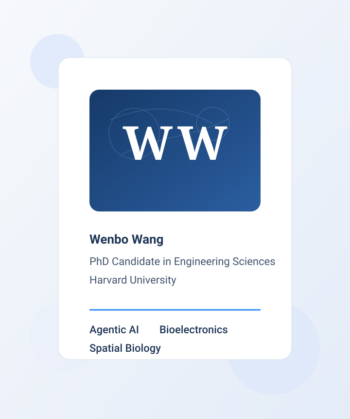

Wang, W.; Swain, S.; Lee, J.; Lin, Z.; Canales, B.; Aljovic, A.; ...; Liu, J. Agentic Lab: An Agentic-physical AI system for cell and organoid experimentation and manufacturing. bioRxiv (2025) [Paper]

Hi, I am Wenbo, currently a PhD candidate in Engineering Sciences at Harvard University, where I work across Harvard SEAS and the Broad Institute with Professors Jia Liu and Xiao Wang.
My research focuses on the intersection of AI and biomedicine, where I build agentic systems, biointegrated electronics, and multimodal analysis tools for cell, tissue, and organoid studies.
I earned my bachelor's degree in chemistry from Zhejiang University. Before and during graduate training, I also worked at Westlake University, the University of Utah, Harvard University, and the Broad Institute.
PhD, Engineering Sciences, Harvard University, 2019 - 2026 (expected)
MS, Engineering Sciences, Harvard University, 2023
BS, Chemistry, Zhejiang University, 2015 - 2019
Note: I was on leave of absence from Harvard during 2019-2020 and doing coursework remotely during 2020-2021. I also was a visiting student at Westlake University from 2019 to 2021 during the COVID-19 pandemic.
Research Interests: Agentic AI for biological experimentation | Flexible bioelectronics | Spatial transcriptomics | Organoid development | Multimodal tissue analysis
Research
1. Agentic AI for cell and organoid experimentation
I am interested in building autonomous and agentic systems that help plan, execute, and interpret biological experiments. This work aims to make laboratory workflows more scalable, more reproducible, and more scientifically interactive.
Related Papers:
- Wang, W.; Swain, S.; Lee, J.; Lin, Z.; Canales, B.; Aljovic, A.; ...; Liu, J. Agentic Lab: An Agentic-physical AI system for cell and organoid experimentation and manufacturing. bioRxiv (2025) [Paper]
- Lee, J.; Lin, Z.; Wang, W.; Baek, J.; Lee, A. J.; Aljovic, A.; ...; Liu, J. DeviceAgent: An autonomous multimodal AI agent for flexible bioelectronics. bioRxiv (2025) [Paper]
2. Flexible bioelectronics and cyborg tissues
I am interested in devices that integrate directly with living tissues and organoids, enabling chronic functional measurement and new ways to study electrical maturation during development.
Related Papers:
- Lin, Z.; Wang, W.; Liu, R.; Li, Q.; Lee, J.; Hirschler, C.; Liu, J. Cyborg organoids integrated with stretchable nanoelectronics can be functionally mapped during development. Nature Protocols (2025) [Paper]
- Wang, W.; Sessler, C. D.; Wang, X.; Liu, J. In Situ Synthesis and Assembly of Functional Materials and Devices in Living Systems. Accounts of Chemical Research (2024) [Paper]
3. Spatial and multimodal mapping of tissue maturation
I am interested in connecting spatial molecular measurements, developmental context, and functional readouts to better chart how tissues and organoids mature over time in vivo and in vitro.
Related Papers:
- Lin, Z.; Wang, W.; Marin-Llobet, A.; Li, Q.; Pollock, S. D.; Sui, X.; ...; Liu, J. Spatial transcriptomics AI agent charts hPSC-pancreas maturation in vivo. bioRxiv (2025) [Paper]
- Sessler, C. D.; Zhou, Y.; Wang, W.; Hartley, N. D.; Fu, Z.; Graykowski, D.; ...; Liu, J. Optogenetic polymerization and assembly of electrically functional polymers for modulation of single-neuron excitability. Science Advances (2022) [Paper]
Selected News
- [2025-12] Served as a poster judge at the 21st Annual Broad Institute Scientific Retreat.
- [2025-07] Delivered an invited talk at HIRN on “STAgent: Autonomous spatial transcriptomics AI agent for Pancreatic Research and Beyond.”
- [2024] Named a Harvard nominee for the Regeneron Prize for Creative Innovation.
- [2023-01] Presented at the Harvard Materials Research Science and Engineering Center seed meeting.
- [2024-01] Research highlighted by Harvard SEAS on long-lasting neural probes.
- [2022-12] Related work was covered by MIT News , Harvard SEAS , and the Broad Institute .
Selected Publications
Lee, J.; Lin, Z.; Wang, W.; Baek, J.; Lee, A. J.; Aljovic, A.; ...; Liu, J. DeviceAgent: An autonomous multimodal AI agent for flexible bioelectronics. bioRxiv (2025) [Paper]
Lin, Z.; Wang, W.; Marin-Llobet, A.; Li, Q.; Pollock, S. D.; Sui, X.; ...; Liu, J. Spatial transcriptomics AI agent charts hPSC-pancreas maturation in vivo. bioRxiv (2025) [Paper]
Lin, Z.; Wang, W.; Liu, R.; Li, Q.; Lee, J.; Hirschler, C.; Liu, J. Cyborg organoids integrated with stretchable nanoelectronics can be functionally mapped during development. Nature Protocols (2025) [Paper]
Wang, W.; Sessler, C. D.; Wang, X.; Liu, J. In Situ Synthesis and Assembly of Functional Materials and Devices in Living Systems. Accounts of Chemical Research (2024) [Paper]
Sessler, C. D.; Zhou, Y.; Wang, W.; Hartley, N. D.; Fu, Z.; Graykowski, D.; ...; Liu, J. Optogenetic polymerization and assembly of electrically functional polymers for modulation of single-neuron excitability. Science Advances (2022) [Paper]
Wenbo Wang
PhD Candidate
Engineering Sciences
Harvard University
Broad Institute of MIT and Harvard
Email
wenbowang@g.harvard.edu
Expected graduation
August 2026
Current appointments
Research Assistant with Jia Liu and Xiao Wang since September 2021
Latest PDF snapshot
WWB-CV-20260105.pdf